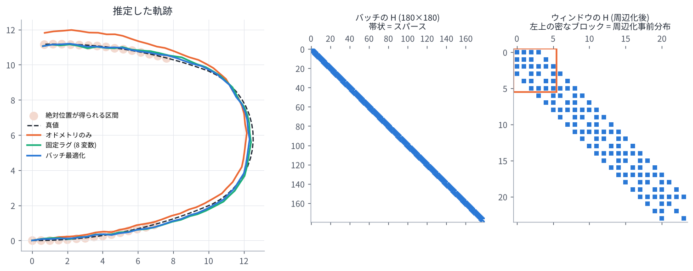

05. ファクターグラフ (GTSAM と iSAM2)
この章のゴール
- ファクターグラフ (変数と因子のグラフ) で推定問題を表せる
- 因子が「関係する変数のところだけ」に情報を足すので、問題が スパース (疎) になることが分かる
- GTSAM の基本的な使い方 (グラフ・初期値・最適化) のイメージを持つ
- iSAM2 が「新しい因子が来るたびに、必要な部分だけ計算し直す」手法であることが分かる
論文とのつながり 論文の手法は GTSAM で実装され、最適化には iSAM2 を使っています。 論文のコスト関数 \(F(\mathcal{X})\) は、そのまま 1 つのファクターグラフとして描けます (下図)。
1. ファクターグラフとは
推定したい量を 変数 (variable) 、変数どうしの関係を表す確率的な制約を 因子 (factor) として、 両者をつないだグラフです。
- 変数: 各時刻の状態 \(\mathbf{x}_i\) (姿勢・速度・バイアス)
- 因子: センサ観測などから決まる「この変数たちはこういう関係にあるはず」という制約。 1 つ 1 つが \(\lVert\text{誤差}\rVert^2_{\boldsymbol{\Sigma}}\) の項になる
すべての因子の積が事後確率に比例し、その最大化は (02 章 の通り) すべての因子の 2 乗誤差の和の最小化になります。
論文の式を描くと次のようになります。

| 因子 | つながる変数 | 色 |
|---|---|---|
| スキャン間マッチング f^P(x_i, x_j) | 2 つ (最新とその 1〜2 個前) | 青 |
| 地図マッチング f^P(x_i, M) | 1 つ (地図は固定なので変数ではない) | 緑 |
| IMU 事前積分 f^I(x_{i-1}, x_i) | 2 つ (連続する状態) | オレンジ |
| 周辺化 C(X) | ウィンドウの古い端の数個 | 灰色 |
1 つの変数だけにつながる因子を 単項因子 (unary factor)、 2 つにつながる因子を 二項因子 (binary factor) と呼びます。地図マッチング因子は単項因子です。
2. スパース性: 因子は関係する変数にしか効かない
ガウス・ニュートン法の \(\mathbf{H} = \sum_k \mathbf{J}_k^\top\mathbf{J}_k\) を考えます。 因子 \(k\) のヤコビアン \(\mathbf{J}_k\) は、関係する変数の列だけが非ゼロです。 したがって \(\mathbf{J}_k^\top\mathbf{J}_k\) も、関係する変数どうしのブロックだけが非ゼロになります。
- 単項因子 → 対角ブロック 1 つ
- 二項因子 \((i, j)\) → ブロック \((i,i), (i,j), (j,i), (j,j)\)
時系列のグラフでは、近い時刻どうしにしか因子がないので、\(\mathbf{H}\) は 帯状のスパース行列 になります。

(中央の図: 60 個の姿勢を一括最適化したときの \(\mathbf{H}\)。非ゼロ要素は全体の約 3%)
スパースな行列は、専用の分解 (スパースなコレスキー分解など) で非常に速く解けます。 変数の並べ方 (消去順序) によって分解中に生まれる非ゼロ要素 (fill-in) の量が変わるので、 GTSAM は COLAMD などで良い順序を自動的に選びます。
3. GTSAM の基本
GTSAM (Georgia Tech Smoothing and Mapping) は、ファクターグラフで推定問題を解く C++ ライブラリです (Python ラッパーもあります)。基本の流れは次の 3 ステップです。
import gtsam
from gtsam.symbol_shorthand import X, V, B # 変数の名前 (キー): X(3) = 3 番目の姿勢 など
graph = gtsam.NonlinearFactorGraph() # 1. 因子を並べる
graph.add(gtsam.PriorFactorPose3(X(0), pose0, noise)) # 単項因子
graph.add(gtsam.BetweenFactorPose3(X(0), X(1), rel_pose, noise)) # 二項因子
graph.add(gtsam.ImuFactor(X(0), V(0), X(1), V(1), B(0), pim)) # IMU 因子 (5 変数)
initial = gtsam.Values() # 2. 変数の初期値を入れる
initial.insert(X(0), pose0_guess)
...
result = gtsam.LevenbergMarquardtOptimizer(graph, initial).optimize() # 3. 最適化
自作の因子は、「誤差 \(\mathbf{e}\) とヤコビアン (または線形化した \(\mathbf{H}, \mathbf{b}\)) を返すクラス」を
作ればグラフに入れられます。著者の gtsam_points は、VGICP などのスキャンマッチングのコストを
GTSAM の因子として実装したライブラリです (IntegratedVGICPFactorGPU など)。
09 章 で詳しく見ます。
4. iSAM2: 増えていくグラフを効率よく解く
ロボットは動き続けるので、グラフには新しい変数と因子が次々に追加されます。 毎回ゼロから全体を解き直すのは無駄です。
iSAM2 [Kaess+ IJRR2012] は、
- 問題を「ベイズ木 (Bayes tree)」というデータ構造の形で分解したまま保持し、
- 新しい因子が来たら、その影響を受ける部分 (たいてい木の上の方の、新しい変数の周り) だけを分解し直し、
- 線形化点からのずれが大きくなった変数だけを再線形化する
ことで、毎回の更新を高速にしています。GLIM の設定にある isam2_relinearize_thresh (再線形化するかどうかの閾値) や
isam2_relinearize_skip (何回に 1 回再線形化をチェックするか) は、この 3. を調整するパラメータです。
細かいアルゴリズム (ベイズ木の作り方など) は、この論文を理解するうえでは 「必要なところだけ計算し直してくれる高速なソルバ」という理解で十分です。
5. バッチ・フィルタ・スムーザ
| 方式 | 何を最適化するか | 長所 | 短所 |
|---|---|---|---|
| バッチ最適化 | 最初から今までの全状態 | 最も正確 | 時間とともに計算量が増える |
| フィルタ (カルマンフィルタ等) | 最新の状態だけ (過去はすぐ周辺化) | 軽い | 一度線形化した過去の情報は修正できない |
| 固定ラグ平滑化 (論文) | 最新の数秒分の状態 | 計算量一定で、ウィンドウ内は何度でも再線形化できる | ウィンドウの外は固定される |
論文の手法は 3 番目です。次の章で詳しく見ます。
演習 6 (前半)
python exercises/ex06_factor_graph.py
- numpy だけでファクターグラフ (姿勢の事前分布・オドメトリ・絶対位置観測) を組み立てて解く
- \(\mathbf{H}\) のスパース性を可視化する
- 後半の固定ラグ平滑化は 06 章 で扱う
GTSAM をインストールできる人は、exercises/optional/opt_gtsam_imu_isam2.py で
本物の ImuFactor と iSAM2 を試してみてください。
理解度チェック
- 変数 \(\mathbf{x}_3\) と \(\mathbf{x}_5\) をつなぐ二項因子は、\(\mathbf{H}\) のどのブロックに値を足す?
- 地図マッチング因子 \(f^P(\mathbf{x}_i, \mathcal{M})\) が単項因子なのはなぜ?
- iSAM2 が毎回全体を解き直すより速いのはなぜ?
答えの例
- \((3,3), (3,5), (5,3), (5,5)\) のブロック。
- 地図点群 \(\mathcal{M}\) は既知で固定 (最適化しない) なので、変数は \(\mathbf{x}_i\) の 1 つだけだから。
- 分解の結果 (ベイズ木) を保持しておき、新しい因子の影響を受ける部分だけを計算し直すから。再線形化も必要な変数だけに絞っている。
もっと知りたい人へ
- F. Dellaert, M. Kaess, "Factor Graphs for Robot Perception," Foundations and Trends in Robotics, 2017.
- M. Kaess et al., "iSAM2: Incremental Smoothing and Mapping Using the Bayes Tree," IJRR 2012.
- GTSAM 公式: https://gtsam.org/ (チュートリアルと Python の例が充実)